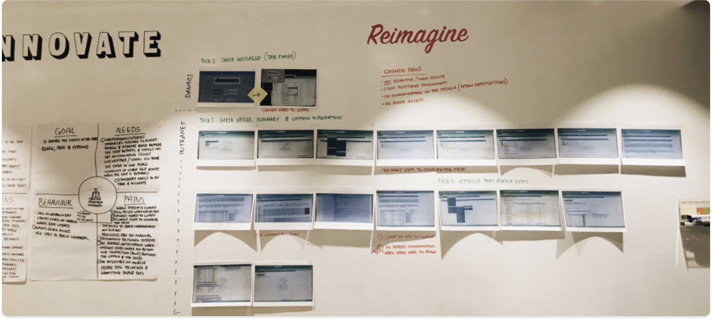
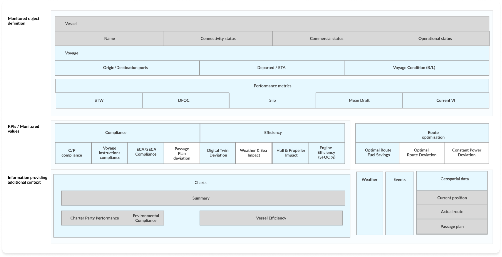
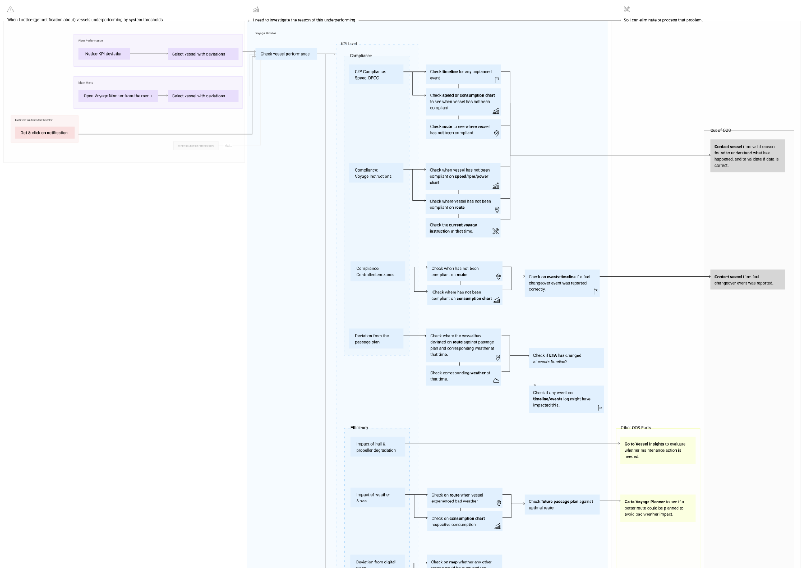
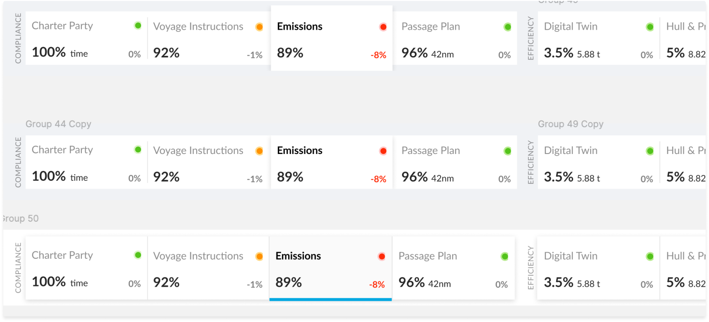
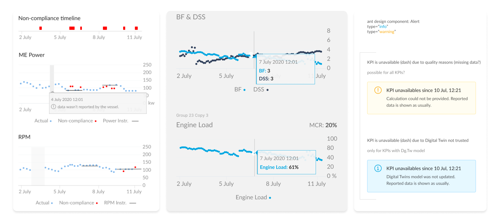
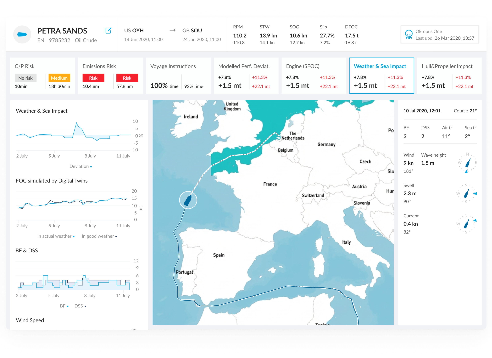
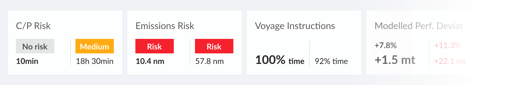

Fleet’s operational managers at maritime companies live in app-switching. They’ll have one browser tab open to check fuel consumption, another for performance metrics, a third for compliance data. Half the data was calculated manually in spreadsheets.
Process
The design process
1. Mapping roles and user flows (research)
Before designing a single screen, I spent time understanding how operational managers work. Together with a researcher, I conducted interviews with captains and fleet managers, mapping their daily tasks, decision points, and pain points directly on the wall.
Key findings:
Managers called a captain up to once per day to gather data that should have been automated.
7 separate tools meant critical context lived in different places, and sometimes fell through the gaps.
Manual entry created data accuracy issues that compounded downstream into compliance risk.

2. Data model
Before wireframing, I mapped the complete data model, what the system monitors, what it measures, and what additional context it surfaces.
KPIs/Monitored values: Grouped by compliance, efficiency, and route optimisation.
Contextual data: Charts, weather, events, and geospatial position that explain why a KPI is deviating.

3. Investigation flow
This flow maps how an operational manager moves from noticing a KPI deviation to resolving it.
The core design insight: Users don’t land on a dashboard and read it top to bottom. They arrive at a specific KPI because something flagged their attention. The IA needed to support investigation paths, not just display.
Each KPI category (compliance, efficiency, route performance) has its own investigation path, which data to check next, which chart to open, and when to escalate to vessel contact.

4. Design explorations
Later explorations focused on the fleet-level view: how managers monitor multiple vessels simultaneously and drill into a specific vessel’s voyage details.
Design decisions:
Progressive disclosure: From summary KPIs at fleet level to full voyage detail on click. Users shouldn’t need to navigate away to answer “why is this vessel deviating?”
Event log alongside map: The vessel route and its event log sit side by side, so managers can correlate a position change with a reported incident without switching screens.
Vessel search with disambiguation: Search results show route context (origin to destination) to help managers identify vessels with similar names.
KPI status bar
Early exploration of how to surface compliance and efficiency KPIs at a glance. The challenge: fleet managers needed to scan across multiple metric categories (compliance, efficiency, route performance) and immediately know which required action.

Charts
Data from charts needs to provide confidence. If data is missing, the representation must show it. I established three principles for every chart in the system:
Signal over noise. Show deviations clearly. Hide data that adds no decision value.
Missing data is visible. A gap is not the same as zero. Users needed to know when the vessel stopped reporting.
Tooltips are contextual. Hovering reveals the exact value and timestamp, not just an approximation.

5. Final design
The Voyage Monitor dashboard became 90POE’s core product module, shipping from a single client engagement to the world’s leading maritime platform.
7 to 1 tools consolidated into a single source of truth.
Minutes to Seconds decision time for fleet operational managers.
Core infrastructure: What started as one dashboard became the foundation of the entire OpenOcean platform.

Solution
Solution
A unified dashboard. One screen shows everything users need: real-time vessel data, performance against benchmarks, weather context, compliance status.
Metrics are grouped by vessel component: engine, propellers, weather, charter party. Each shows a status marker: gray (normal), yellow (caution), red (action).

Users scan in 5 seconds. When something deviates, they click for historical context and weather data.
“Why did this happen?” → click for details.
Outcomes
Decision time: minutes → seconds
App-switching: 7 systems → 1 dashboard
Calculations: manually → automated
Impact
Market impact
The Voyage Monitoring design became 90POE’s core platform modules.
Real-time vessel performance and consumption data flow directly into commercial decision-making, with live P&L statements reflecting every operational change.
What started as a single dashboard for one customer is now infrastructure. And my favourite project I have designed.